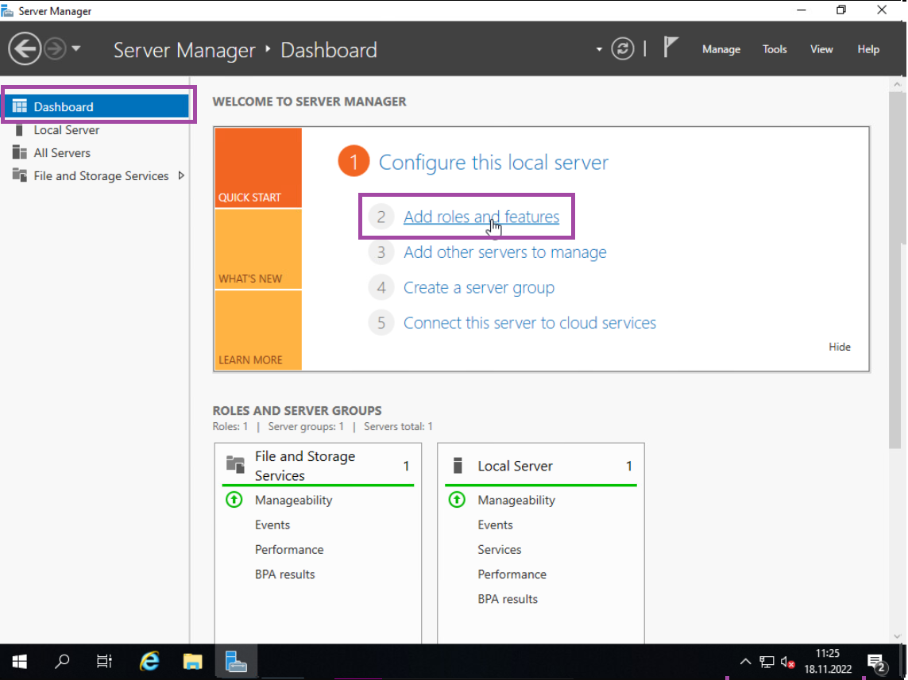
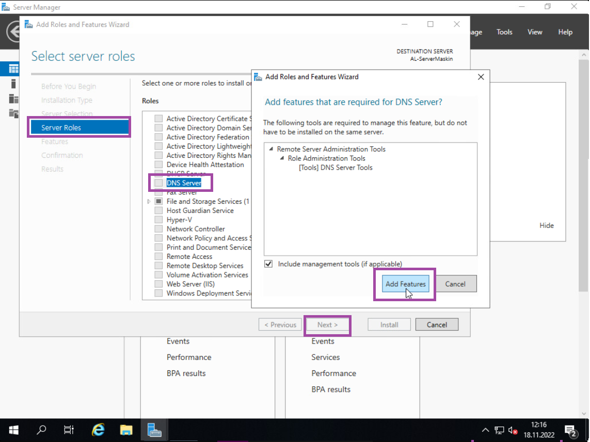

LAURIN LIMITED GUIDEBOOK ©
INSTALLERE DNS
Lær deg å installere og bruke DNS (Domain Name System), DNS blir brukt som et bibliotek for forskjellige IPer. Klienten søker opp et domene, og DNS'en tar den informasjonen og søker etter en IP koblet til det domenet.
Nå skal vi installere DNS (Domain Name System) på serveren. Naviger til «Dashboard» i Server Manager, og trykk på «Add roles and features». DNS er et system som maskinen trenger for at domenen kan bli funnet av andre maskiner. DNS fungerer som et bibliotek hvor alle domenene er lagret.
Trykk deretter på «next» helt til du når «Server Roles», hvor du da finner span. «DNS Server» på lista og klikker på den. Så kan du trykke på «Add Features» og trykke på «next» helt til du kan trykke på «Install». (Anbefaler å trykke på «Allow Automatic Restarts» når du er på Confirmation fanen, så serveren har de nyeste innstillingene klare.)
Når den er ferdig så er det bare å trykke på «Close».
Fortsett til neste steg